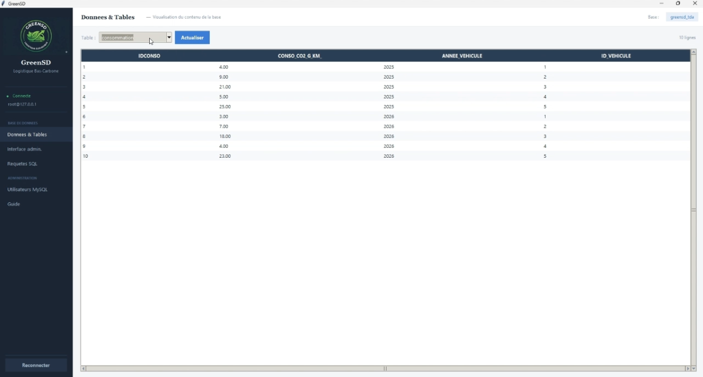
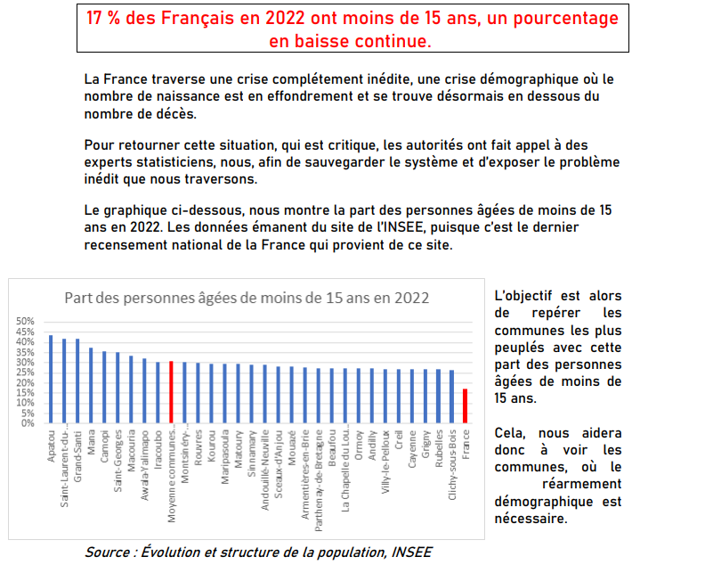
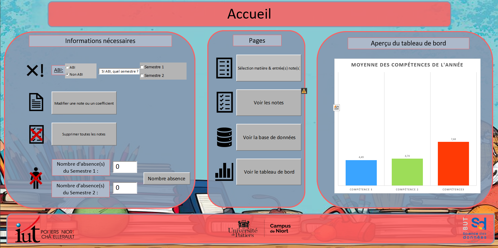

Analyse complète d'un jeu de données, mise en forme de rapports et visualisations synthétiques.
Exploration statistique d'un dataset, identification des tendances et outliers.

Modélisation entité-relation, création de schéma relationnel et requêtes SQL.
Méthodes d'estimation, intervalles de confiance et techniques d'échantillonnage.
Manipulation, nettoyage et structuration de fichiers de données brutes.
Création de dashboards interactifs et de rapports dynamiques sous Power BI.

Collecte, traitement et production de données dans un contexte professionnel réel.
Application de modèles de régression linéaire et multiple sur des données concrètes.

Extraction et mise en forme de rapports structurés depuis une base de données SQL.
Construction de tableaux croisés et analyse exploratoire approfondie d'un dataset.
Savoir présenter un territoire en anglais.
Traitement et visualisation des données Parcoursup pour rendre lisibles les flux étudiants.